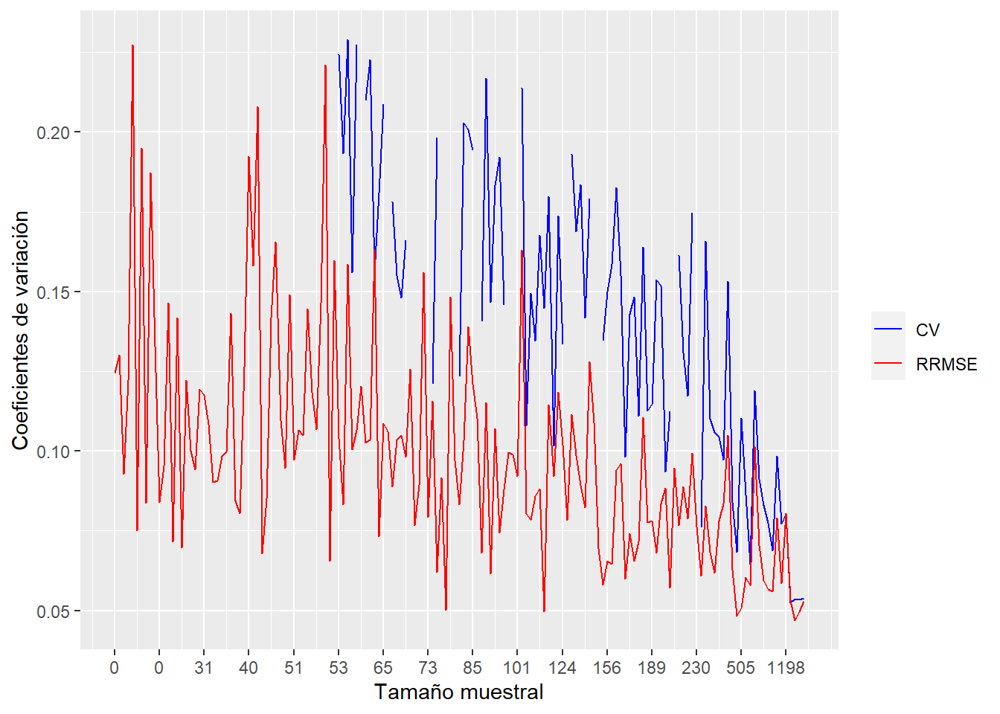
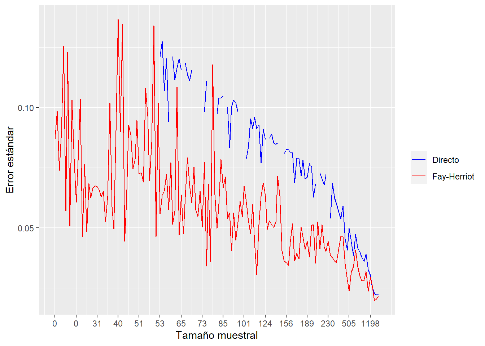

library(tidyverse)
library(survey)
library(srvyr)
library(TeachingSampling)
library(stringr)
library(magrittr)
library(sae)
library(ggplot2)
library(emdi)
library(patchwork)
library(reshape2)
library(haven)
library(BayesSAE)
library(mice)
library(rgdal)
library(spdep)
library(tmap)
library(sp)
library(sf)
library(dplyr)
library(magrittr)
select <- dplyr::selectEstimación de la tasa de informalidad en República Dominicana empleando modelos de área con transformación arcoseno
Validación del modelo de área
Lectura de librerías
Leer bases de datos
# Shapefile
poligonos_dominio <- read_sf("../shapefiles2010/DOM.shp" )
# Base de datos completa
base_completa <- readRDS('../Data/base_completa.Rds')
# Modelo FH con transformación Arcoseno
fh_arcsin <- readRDS("../Data/fh_arcsin.Rds")
# Estimaciones del modelo FH con transformación Arcoseno
estimaciones <- readRDS('../Data/estimaciones.Rds') %>%
mutate(rrmse_FH = sqrt(FH_MSE) / FH,
rmse_FH = sqrt(FH_MSE),
Direct_ee = sqrt(Direct_MSE))Análisis de residuales y efectos aleatorios
#--- Residuales estandarizados ---#
residuals <- fh_arcsin$model$real_residuals
std_residuals <- (residuals - mean(residuals)) / sd(residuals)
#--- Residuales estandarizados de los efectos aleatorios ---#
rand.eff <- fh_arcsin$model$random_effects
srand.eff <- (rand.eff - mean(rand.eff)) / sd(rand.eff)
#--- Gráfico de residuales estandarizados ---#
theme_set(theme_bw())
ggplot(data.frame(Residuals = fh_arcsin$model$std_real_residuals)) +
geom_point(aes(y = Residuals, x = 1:length(Residuals))) +
labs(y = "Residuales estandarizados", x = "") +
geom_hline(yintercept = 0, col = "blue")QQ plots
p1 <- ggplot(data.frame(Residuals = std_residuals),
aes(sample = Residuals)) +
stat_qq() + stat_qq_line(col = "blue") +
ggtitle("qqplot - residuales estandarizados")
p2 <- ggplot(data.frame(Residuals = srand.eff),
aes(sample = Residuals)) +
stat_qq() + stat_qq_line(col = "blue") +
ggtitle("qqplot - efectos aleatorios")
p1 | p2Densidades
color = c("blue", "lightblue3")
p3 <- ggplot(
data.frame(Residuals = std_residuals),
aes(x = Residuals),
fill = color[2],
color = color[2]
) +
geom_density(fill = color[2],
color = color[2],
alpha = 0.4) +
stat_function(fun = dnorm) + xlim(-4, 4) +
ggtitle("Densidad - residuales estandarizados")
p4 <- ggplot(
data.frame(Residuals = srand.eff),
aes(x = Residuals),
fill = color[2],
color = color[2]
) +
geom_density(fill = color[2],
color = color[2],
alpha = 0.4) +
stat_function(fun = dnorm) + xlim(-4, 4) +
ggtitle("Densidad - efectos aleatorios")
p3 | p4a <- summary(fh_arcsin)
a$normality %>% tba()| Skewness | Kurtosis | Shapiro_W | Shapiro_p | |
|---|---|---|---|---|
| Standardized_Residuals | 0.2087 | 2.7168 | 0.9890 | 0.6659 |
| Random_effects | 0.2712 | 2.8440 | 0.9902 | 0.7491 |
Coeficiente de determinación
dom_obs <- estimaciones %>% filter(!is.na(Gamma))
base_dir <- base_completa %>% inner_join(x = dom_obs)
#--- Coeficientes del modelo ajustado ---#
Betas <- as.matrix(fh_arcsin$model$coefficients[, 1], ncol = 1)
rownames(Betas) <- rownames(fh_arcsin$model$coefficients)
XS <- cbind(as.matrix(base_dir %>%
dplyr::select(rownames(Betas))))
residuos <- XS %*% Betas - c(colMeans(XS) %*% Betas)
D <- dim(XS)[1]
q <- dim(XS)[2]
S2Beta <- sum(residuos ^ 2) / (D - 1)
su2 <- fh_arcsin$model$variance
(R2 <- 1 - (su2 / (((D - q) / (D - 1)) * su2 + S2Beta)))[1] 0.9927712Validaciones en relación al tamaño de la muestra
N_dominios <- nrow(base_completa)
ggplot(estimaciones[order(estimaciones$n), ],
aes(x = 1:N_dominios)) +
geom_line(aes(y = Direct, color = "Directo")) +
geom_line(aes(y = FH, color = "Fay Herriot")) +
labs(y = "Formalidad",
x = "Tamaño muestral", color = "") +
scale_x_continuous(breaks = seq(1, N_dominios, by = 10),
labels = estimaciones$n[order(estimaciones$n)][seq(1, N_dominios, by = 10)]) +
scale_color_manual(values = c("Directo" = "Blue", "Fay Herriot" = "red"))Estimación directa vs Fay-Herriot
ggplot(estimaciones, aes(Direct, FH)) +
geom_point() +
geom_smooth(method = "lm") +
ggtitle("Comparación de estimaciones")Distancias de Cook
D <- dim(base_completa)[1]
CD = numeric(D)
Betas <- as.matrix(fh_arcsin$model$coefficients[, 1], ncol = 1)
V <- diag(1 / (su2 + 1 / (4 * base_dir$n_eff_FGV)))
#--- Ciclo para DC ---#
for (i in 1:D) {
print(i)
BetaModelo <-
fh(formula(fh_arcsin$call$fixed),
vardir = "hat_var",
combined_data = base_completa[-i, ] %>% data.frame(),
domains = "id_dominio",
method = "reml",
transformation = "arcsin",
backtransformation = "bc",
eff_smpsize = "n_eff_FGV",
MSE = FALSE,
mse_type = "NULL"
)
#--- Coeficientes del modelo ajustado ---#
Betas_i = as.matrix(BetaModelo$model$coefficients[, 1], ncol = 1)
betaDiff <- Betas - Betas_i
CD[i] = (1 / (q - 1)) * t(betaDiff) %*% (t(XS) %*% V %*% XS) %*% betaDiff
}lectura de la distancias de Cook calculadas previamente
CD <- readRDS("../Data/cookDis_2021.rds")
data.frame(cookDis = CD, dominios = base_completa$DES_MUNICIPIO) %>%
filter(cookDis > 0.1) %>% tba()| cookDis | dominios |
|---|---|
| 0.2207 | JIMANI |
| 0.6132 | HIGÜEY |
| 0.2151 | LAS TERRENAS |
| 1.9380 | SANTO DOMINGO NORTE |
Gráfico de Distancias de Cook
data.frame(cookDis = CD, dominios = base_completa$DES_MUNICIPIO) %>%
ggplot(aes(y = cookDis, x = 1:N_dominios)) +
geom_point(col = "blue") +
geom_text(aes(label = ifelse(cookDis > 0.1,
as.character(dominios), '')),
hjust = 0, vjust = 0) +
labs(y = "Distancia de Cook", x = "Municipios")Análisis gráfico
Coeficiente de variación y RRMSE
ggplot(estimaciones %>%
arrange(n), aes(x = 1:N_dominios)) +
geom_line(aes(y = Direct_CV, color = "CV")) +
geom_line(aes(y = rrmse_FH, color = "RRMSE")) +
labs(y = "Coeficientes de variación",
x = "Tamaño muestral", color = "") +
scale_x_continuous(breaks = seq(1, N_dominios, by = 10),
labels = estimaciones$n[order(estimaciones$n)][seq(1, N_dominios, by = 10)]) +
scale_color_manual(values = c("CV" = "Blue", "RRMSE" = "red"))
Error estándar y RRMSE
ggplot(estimaciones %>%
arrange(n), aes(x = 1:N_dominios)) +
geom_line(aes(y = Direct_ee, color = "Directo")) +
geom_line(aes(y = rmse_FH, color = "Fay-Herriot")) +
labs(y = "Error estándar",
x = "Tamaño muestral", color = "") +
scale_x_continuous(breaks = seq(1, N_dominios, by = 10),
labels = estimaciones$n[order(estimaciones$n)][seq(1, N_dominios, by = 10)]) +
scale_color_manual(values = c("Directo" = "Blue", "Fay-Herriot" = "red"))
Boxplot: CV Directo
estimaciones %>%
ggplot(aes(y =Direct_CV)) +
geom_boxplot()Boxplot: CV Directo y RRMSE FH (observados)
melted <- estimaciones %>% filter(!is.na(Direct_CV)) %>%
dplyr::select(Direct_CV, rrmse_FH) %>%
melt()
ggplot(melted, aes(factor(variable), value)) +
geom_boxplot() +
labs(y = "Coeficiente de variación", x = "")Boxplot: CV Directo y RRMSE FH
melted <- estimaciones %>%
dplyr::select(Direct_CV, rrmse_FH) %>%
melt()
ggplot(melted, aes(factor(variable), value)) +
geom_boxplot() +
labs(y = "Coeficiente de variación", x = "")Boxplot: Error estándar Directo y RMSE FH (observados)
melted <- estimaciones %>% filter(!is.na(Direct_CV)) %>%
dplyr::select(Direct_ee, rmse_FH) %>%
melt()
ggplot(melted,
aes(factor(variable), value)) +
geom_boxplot() +
labs(y = "Errores estándar", x = "")Boxplot: Error estándar Directo y RMSE FH
melted <- estimaciones %>%
dplyr::select(Direct_ee, rmse_FH) %>%
melt()
ggplot(melted,
aes(factor(variable), value)) +
geom_boxplot() +
labs(y = "Errores estándar", x = "")Matriz vecinos cercanos
#--- Construyendo la matriz de vecinos de una lista de polígonos ---#
lista_comvecinos <-
spdep::poly2nb(pl = poligonos_dominio, queen = FALSE)Cargando: Matriz de vecinos
lista_comvecinos <-
readRDS("../Data/lista_comvecinos.rds")
#--- Matrices de ponderaciones espaciales para matriz de vecinos ---#
W <- nb2mat(lista_comvecinos, zero.policy = T)
#--- Nombrando las filas y columnas de la matriz de ponderaciones espaciales --#
row.names(W) <- paste0(poligonos_dominio$id_dominio)
colnames(W) <- paste0(poligonos_dominio$id_dominio)
#--- Ordenando las filas y columnas de la matriz de ponderaciones espaciales --#
W <- W[order(row.names(W)),]
W <- W[, order(colnames(W))]
#---- Comunas que se encuentran en la matriz de pesos W y de estimaciones ---#
fil <- row.names(W) %in%
estimaciones$id_dominio[!is.na(estimaciones$FH)]
W2 <- W[fil, fil]
#--- Pruebas de correlación espacial de Moran's I y Geary's C ---#
spatialcor.tests(estimaciones$FH[fil], W2) %>% tba()| Statistics | Value | p.value |
|---|---|---|
| Moran's I | 0.0992 | 0.0209 |
| Geary's C | 0.8567 | 0.0055 |